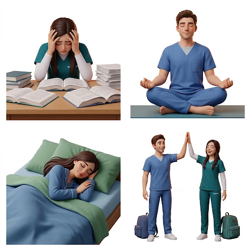

Toma el control de tu calma
Aprende técnicas validadas científicamente para reducir el estrés universitario.
No se trata de eliminar la presión, sino de aprender a navegarla con éxito.

Método Pomodoro
Estudia intensamente 25 minutos y descansa 5. Repite 4 veces y toma un descanso largo de 15 minutos.
Respiración
4-7-8
Inhala 4s, mantén 7s y exhala 8s. Reduce el cortisol al instante.
Checklist de Noche
- check_box Sin pantallas -30 min
- check_box Planificar mañana
- check_box Vaso de agua
- check_box_outline_blank Lectura ligera
Técnicas para el afrontamiento del estrés académico
A veces, dar el primer paso es el más difícil, pero cada pequeña acción cuenta. Dedica unos minutos a explorar este recurso audiovisual; esperamos que te brinde nuevas perspectivas y herramientas prácticas para encontrar tu equilibrio y afrontar los desafíos diarios con mayor serenidad. ¡Recuerda que no estás solo y tienes la capacidad de superarlo!
Micro-hábitos de Bienestar
Sueño de Calidad
Duerme al menos 7-8 horas para consolidar lo aprendido en clase.
Hidratación Cerebral
El cerebro es 75% agua. Beber agua mejora tu concentración.
Movimiento 5m
Camina o estírate 5 min después de cada hora de estudio.
Datos curiosos
- psychology_alt Investigaciones señalan que entre 10 y 15 minutos diarios de práctica de mindfulness son suficientes para notar mejoras en la concentración; incluso dos semanas de práctica breve y constante generan cambios medibles en la memoria de trabajo (Mrazek et al., 2013).
- psychology_alt La técnica de respiración 4-7-8 es utilizada como recurso rápido de autorregulación y puede aplicarse en cualquier lugar, incluso segundos antes de entrar a un examen.
Preguntas de retroalimentación
- help Practica ahora mismo 3 respiraciones profundas (inhala 4 segundos, retén 7, exhala 8). ¿Notaste algún cambio en tu cuerpo o en tu nivel de tensión?
- help De las 4 estrategias (respiración, organización del tiempo, pausas activas, mindfulness), ¿cuál se adapta mejor a tu rutina diaria y por qué?